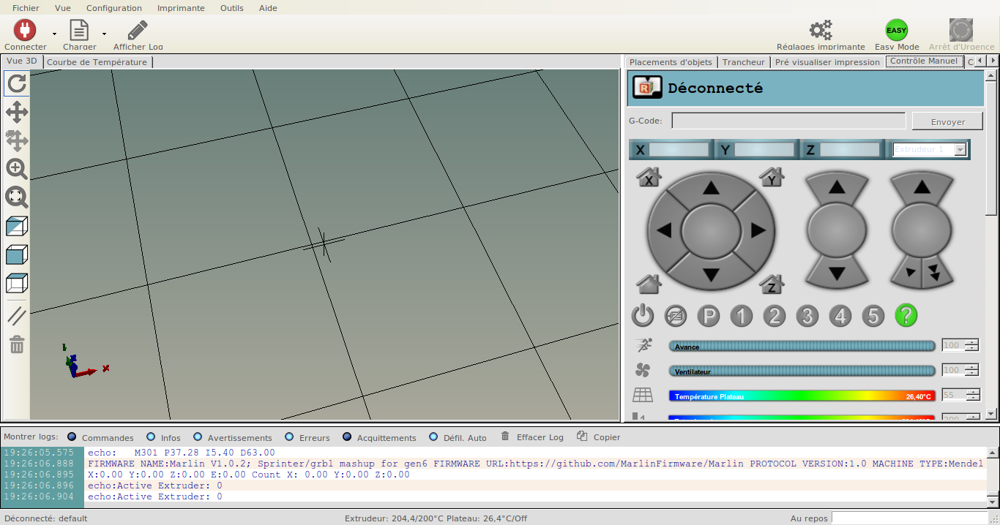
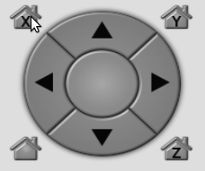
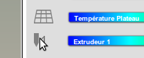
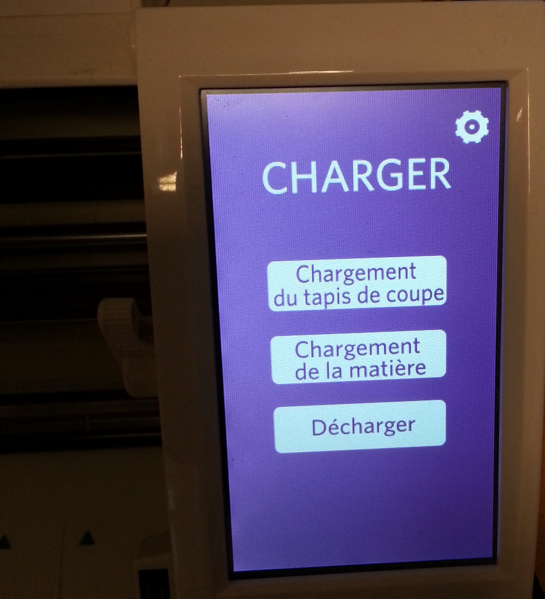

Introduction
Retrouver içi des aides pour l'utilisation des outils Matériels et Logiciels disponible sur place ou sur server distant.
Informations techniques ou commentaires
Contributions
Pour modifier la documention ci-dessous:
imprimante 3D
Création de fichiers d'impression
Impression supervisé si besoin
Le Petit FabLab compte 3 imprimantes 3D.
- Zortrax mise à disposition par le Pot Au Fab
- RepRap FoldaRap mise à disposition par Sakada
- Dagoma DISCO EASY 200
Les fichiers d'objet 3D
Logiciel de modélisation 3D (exemple)
Windows/Apple
Linux/Windows/Apple
Téléchargement d'un fichier depuis une bibliothèque ligne
3D Zortrax m200
Zortrax m200 Manual/fr
voir le manuel

Aspect techniques
- Dimension: “345 x 360 x 430000 mm”
- Volume_maximum_impression: “200 x 200 x 180 mm”
- Lecteur_de_carte: oui
- Précision: 25 microns
Format propriétaire
Edition du fichier sur logiciel Zortrax
Suivant le design de la création, il se peut que les lignes de forces du volume,
mettent à mal l'impression.
Des problemes de “courbages"et d'aparitions d'artefacts peuvent survenir.
- sauvegarder sur carte SD le fichier 3D
nom_du_fichier-temps-impression.ztl - charger la carte SD dans la Zortrax
- naviguer dans l'ecran LCD fichier/fichier.ztl
- lancer l'impression
RepRap FoldaRap
FoldaRap Build Manual/fr
voir le manuel en FR

Aspects techniques
- Dimension: "335 x 348 x 318 mm”
- Volume_maximum_impression: “140 x 140 x 140 mm”
- Lecteur_de_carte: non
- Précision: 50 microns
tar -xzf repetierHostLinux.tgz
cd RepetierHost
sh configureFirst.sh
sudo usermod -a -G dialout UserName
Logiciel Repetier Host / Pronterface
l'installation du logiciel Repetier Host se fait sur toutes les pateformes.
Voir les paquets sur :
https://www.repetier.com/download-now/
sudo apt-get install monodevelop
curl -O http://dl.slic3r.org/linux/slic3r-linux-x86-1-2-9-stable.tar.gz
tar zxvf slic3r-linux-x86-1-2-9-stable.tar.gz
déplacer le fichier Slic3r dans le repertoire RepetierHost
mv slic3r ./RepetierHost
Il y a cependant 2 choses à vérifier.
- la dépendance avec Mono Develop
- l'installation du trancher Slic3r

Brancher la FoldaRap en USB
Mise sous tension de la FoldaRap.
Dans RepetierHost clicker sur connecter
Cliquer sur l'onglet contrôle manuel
Historique et résolution des problèmes rencontrer
18/09/2016 LPFP sprint imprimantes 3D Blog post
- vérifier les axes x y z
- click sur icon
Home x/y/x
- click sur icon

- calibrer la temperature
Extrudeur 1à 195°C (Suivant le type de file)- mettre en route la chauffe de l'extrudeur
- attendre que la jauge arrive à 195°C
- vérifier la fusion …

Dagoma Disco Easy 200
Dagoma Disco Easy 200
voir aide

Historique et résolution des problèmes rencontrer
18/09/2016 LPFP sprint imprimantes 3D Blog post
Aspects techniques
- Dimension: “370 x 370 x 370 mm”
- Volume_maximum_impression: “200 x 200 x 200 mm”
- Lecteur_de_carte: oui (micro SD)
- Précision: 100 microns
Installer le packet Pronterface Win ou OSX
http://www.pronterface.com/index.html#download
http://koti.kapsi.fi/~kliment/printrun/
repertoire disponible sur GitHub
https://github.com/kliment/Printrun
# dependances:
sudo apt-get install python-serial python-wxgtk2.8 python-pyglet python-numpy cython python-libxml2 python-gobject python-dbus python-psutil python-cairosvg git
#installation depuis les sources
git clone https://github.com/kliment/Printrun.git
Brouillion
Logiciel Pronterface / Repetier Host
Ouvrir Pronterface

Vérifier le port com04 ou 06 la vitesse 250000 Cliquer sur le bouton «connect» Complèment à droite, il y a une sorte de journal qui affiche toute les informations en directe venant de la machine. Cocher la case «monitor» Cela active les graphique de température complètement en bas à gauche. Régler la température de la buse à 200° et du plateau à 95°. Cliquer sur «On» pour activer la montée en température. Pour créer le Gcode pour l’impression: Cliquer sur «Fichier>Slicing Setting» La fenêtre de Sl3cer s’ouvre, chaque onglet correspond aux réglagles machines (remplissage, nombre de contour, dimensions du plateaux). Cliquer sur Ouvrir, aller chercher le fichier stl.


format .STL du fichier pour impression
(éclaircir le pourquoi du 3D>STL puis STL>Gcode)
Liens vers tuto pour exporter le fichier au format .stl “stéréolithographie” avec Blender, sketchup
note avec Rhinoceros:
Avantage temps de compilation 3D>STL puis STL>Gcode mais fichier moins précis.
Avantage Solidworks fichier STL fidèle au modèle 3D temps de compilation 3D>STL très long STL>Gcode encore plus long.
Exporter en stl options ASCII (fichier moins lourd)
Nom du fichier sans accent ni caractères spéciaux.
Découpeuse vinyle

Shilhouette CAMEO
Aide Manuel CAMEO
https://edutechwiki.unige.ch/en/Silhouette_Cameo
Aspect techniques
- Format papier/vinyle max: A3
- Largeur du tapis: 30.5 cm
- connection: USB
Logiciel et fichiers
Logiciel propriétaire Silhouette
https://silhouetteamerica.com/software
Logiciel de dessin et d'impression
Silhouette Studio®
Logiciel de dessin vectoriel (exemple)
Windows/Apple
Illustrator
sudo apt-get install inkscape
Windows/Apple/Linux
Inkscape
Dans un souci de détail, essayez de penser à travailler une couleur à la fois et à économiser de la matière par rapport à l'agencement de vos formes.
Tips sur Inkscape
Envoyer le fichier pour la découpe

- allumage
- ecran LCD:
chargement du tapis de coupe - Logiciel Shilhouette (charger/faire le .SVG):
- cliquer sur
parametre de découpeuse(standard ou avancer)
- cliquer sur
- ecran LCD découpeuse: cliquer sur
envoyer vers silhouette - attendre que la découpe se finisse
- ecran LCD découpeuse: cliquer sur
décharger
cd /home/user/mon_dossier/
sudo apt-get install libqt4-dev libusb-1.0-0-dev
git clone https://github.com/LPFP/robocut.git
cd robocut
qmake-qt4
make
sudo adduser UserName lp
sudo cp robocut /usr/local/bin
robocut
Installation Linux Robocut pour la CAMEO
Placez vous dans un dossier pour accueillir le logiciel Robocut.
Executer les commandes ci-contre.
Si l'installation ne marche pas avec le model CAMEO il faut modier avec:
Piste pour robocut Linux
http://robocut.org/
https://github.com/nosliwneb/robocut/issues
https://github.com/Timmmm/robocut
http://custom.ultramini.net/robocut-compatible-with-silhouette-cameo/
- forker le repo git robocut
- modifier le fichier
Plotter.hligne 53
const int PRODUCT_ID_SILHOUETTE_CAMEO = 0x1121;
par
const int PRODUCT_ID_SILHOUETTE_CAMEO = 0x112B;
si non voir les commentaires des fichiers Plotter et vérifier les informations et ID de la CAMEO dont vous disposez.
Raspberry
description Branchement, Install, Codage.
Arduino
description Branchement, Install, Codage.
Wordpress
Installation, sauvegarde ou exporter le site. envoyer un post.
Jekyll
Repertoire
#
metre à jour avec GitHub
créer une issue sur GiHub,
indiquer quelle fichier il faudrait modifier avec le code à rajouter.
créer/modifier un fichier
Exemple d'un objet en JSON
{
"name": "Android",
"image": "350x350.png",
"url": "https://github.com/LPFP/",
"date": "30 Oct 2016",
"tags": ["Android", "API","java"]
}
Section data
Pour editer un Atellier
Aller dans le repertoire data/projects.json
Pour editer un Materiel
Aller dans le repertoire data/harware.json
Pour editer une Historique
Aller dans le repertoire data/timeline.json
Aide aux commandes Git
http://rogerdudler.github.io/git-guide/index.fr.html
installer l'environement de developpement
# install ruby
sudo apt-get install ruby-full rubygems
# metre à jour si besoin
gem update --system
# verifier que bundler est bien installer
gem install bundler
Ci-contre installer un environement de developpement Ruby sous Ubuntu
Pour installer Ruby sur Windows rdv sur la page
rubyinstallerPour installer Ruby sur OSX utiliser la commande
homebrew
Vérifier que bundler est bien présent et fonctionnel ainsi que gem
installer les sources du projets avec la commande bundler.
# Forker le repertoire dans votre Github
git clone https://github.com/YOURUSERNAME/repo.git
cd repo
# installer le repertoire
bundler install
- Faire une copie local du repertoire.
# lancer le server local
bundle exec jekyll serve
ouvrir votre navigateur à l'adresse
http://127.0.0.1:4000
- lancer le server
- éditer des fichiers et vérifier les modifications dans votre navigateur.
Une fois votre édition complette vous pouvez la partager et faire une Pull Requests.